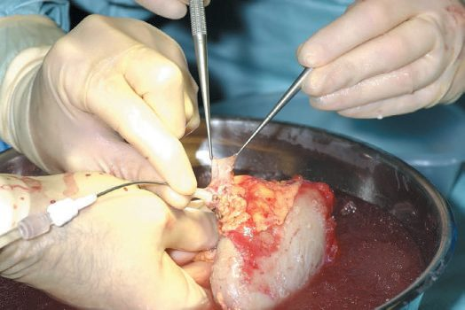
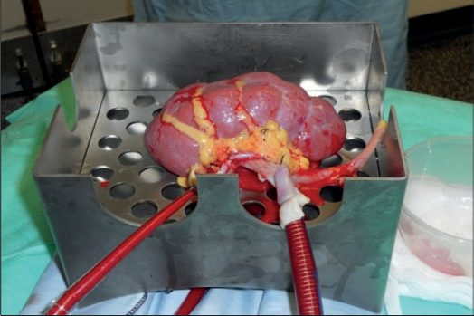

Organ Donation and Allocation
Summary
Transplantation is limited by supply, and the whole apparatus of donation law, brainstem death testing, retrieval technique and preservation exists to widen that supply without compromising the graft. The increasing success of transplantation has raised demand, worsened by widening the criteria for who can be a candidate, leading to an increasing national shortage of organs [1]. This page covers the UK legal framework and its shift from opt-in to opt-out, the distinction between donation after brainstem death and after circulatory death, the criteria and contraindications for cadaveric donation, the UK brainstem death code, retrieval technique, and organ preservation.
Definition
DBD is donation after brainstem death, the traditional heart-beating donor. DCD is donation after circulatory death, the non-heart-beating donor [1].
Extended-criteria kidney donors are defined as donors over the age of 60, or donors aged 50 to 59 with at least two of three medical criteria: a history of hypertension, a final pre-procurement creatinine above 1.5 mg/dL, and cerebrovascular accident as the cause of death [1].
Over 100 organ procurement organisations, all members of the federally mandated Organ Procurement and Transplantation Network overseen by UNOS, each cover a region: hospitals receiving any federal reimbursement must report all deaths promptly, and the OPO judges medical suitability, seeks family consent, asks the OPTN to identify the best HLA-matched recipients and arranges recovery and transport; the 2003 "Organ Donation Breakthrough Collaborative" spread best practice, yet living donation peaked in 2007 and by 2016 more than 118,000 people were waiting while 33,611 transplants were done, with tissue engineering and knockout-pig xenotransplantation (still blocked by immunological barriers and porcine retroviral xenosis) offering no near-term relief [2].
Pathophysiology
Organ preservation relies predominantly on hypothermia at around 4°C, the principle being to reduce cellular metabolism and oxygen requirement, so reducing tissue injury and maintaining graft viability [1]. Despite this there is still cold ischaemic injury, so cold ischaemic times must also be kept to a minimum [1].
Preservation solutions contain buffers and a balanced electrolyte composition designed to prevent cellular swelling, and fall into two categories: extracellular solutions with high sodium and low potassium, such as Bretschneider (HTK); and intracellular solutions with high potassium and low sodium, such as University of Wisconsin solution, considered the gold standard [1].
Warm ischaemia is the difference between the two donor types. In DBD donors the heart is beating and organs are perfused with oxygenated blood until procurement; in DCD donors cardiac arrest has already occurred. DCD donors therefore typically have a warm ischaemia time of around 10 to 20 minutes, whereas DBD donors do not [1].
Clinical features
Most DCD donors are controlled donors, in whom life-prolonging treatment is withdrawn after a decision that the overall prognosis makes such treatment futile [1].
This creates a specific ethical and legal constraint. Such donors are living patients until the time of cardiac arrest and generally lack capacity to consent because they are unconscious, so they can only be treated in line with their best interests under common law, which restricts the interventions available to optimise the condition of the organs [1].
Aetiology
Deceased donors form the majority of organ donors in the UK [1]. Traditionally most were DBD, but with advances in immunosuppression an ever-increasing number of DCD donors are used, alongside donors previously considered marginal [1].
Allocation rests on three competing principles [1]:
1. Fairness, those waiting longest are allocated organs first. 2. Medical condition, the organ should go to those in greatest need. 3. Utility, allocation such that the greatest number of organ life-years is achieved.
For contrast, in the United States time on the list and HLA matching are the primary determinants of organ allocation [3], and the hierarchy for permission from next of kin runs spouse, then adult son or daughter, then either parent, then adult brother or sister, then guardian, then any other person authorised to dispose of the body [3].
Diagnosis
Potential donors undergo a defined workup: review of history and clinical examination, ECG, chest radiograph, arterial blood gases, ABO typing, testing for HIV, hepatitis B and C and CMV, and tests of organ function such as urea and electrolytes, liver function tests and echocardiography [1].
Death certification differs by donor type, brainstem testing for DBD donors, neurological assessment for DCD donors [1].
The Harvard ad hoc committee's 1968 concept of "irreversible coma" led to legal acceptance of brain death in the United States in 1981, the statute requiring "acceptable medical standards" without specifying method so hospitals write their own policies; brain death is the irreversible cessation of all brain function including the brainstem, after excluding mimics (drug overdose, medication effects, severe hypothermia, hypoglycaemia, induced coma, chronic vegetative state), and the four essential steps are establishing the proximate cause, clinical examination for coma, absent brainstem reflexes and apnoea, ancillary EEG, cerebral angiography or nuclear scanning when clinical criteria cannot be met, and documentation, with a parallel paediatric guideline; the OPO then assumes care, takes medical and social history and screens with serological or molecular testing for HIV and hepatitis under UNOS eligibility bylaws [2]. Donation after cardiac death, reintroduced in the 1990s and classified by the Maastricht scheme, in the United States mostly involves Maastricht III donors with devastating injury and no prospect of meaningful recovery who do not meet brain-death criteria; life support is withdrawn after next-of-kin consent and procurement follows cessation of circulation and respiration under state-specific protocols that the team must respect [2].
Thresholds and severity
Absolute contraindications to cadaveric donation are age above 85; primary intracerebral lymphoma and all secondary intracerebral tumours; any active cancer with evidence of spread outside the affected organ within 3 years of donation; melanoma, except completely excised stage 1 cancers; active haematological malignancy; active and untreated tuberculosis; definite, probable or possible human transmissible spongiform encephalopathy including CJD and variant CJD; HIV disease, though not HIV infection; and West Nile virus [1]. This list is continually reviewed and updated on the NHS Blood and Transplant website [1].
Organ-specific criteria:
| Organ | Criterion |
|---|---|
| Kidney | Donor with acceptable renal function |
| Heart | Age 1 month to 60 years, no known cardiac disease |
| Heart–lung | As for heart; no pulmonary disease or trauma; acceptable pO2 and pCO2 on under 50% inspired oxygen |
| Liver | No known liver disease, drug addiction or hepatitis B |
| Pancreas | Age 10 to 65 years, no diabetes |
Cold storage times differ sharply by organ: the kidney can be stored for 48 hours, the liver for 24 hours, and the heart and lungs for 6 hours each [3].
- The UK legal framework is set by three Acts, and two of the four nations have moved to opt-out.
- Organ donation is regulated by the Human Tissue Act 2004 in England and Northern Ireland, the Human Tissue Act (Scotland) 2006 in Scotland, and the Human Transplantation (Wales) 2015 Act in Wales [1].
- These Acts support an opt-in system, in which a person actively registers on the organ donor register [1]. The law changed to an opt-out system in Wales in December 2015 and in England in May 2020, under which an individual who does not want to be considered for donation must actively register to opt out [1].
Consent for cadaveric donation means opt-in agreement from next of kin, or deemed consent in Wales [1].
Brainstem death testing, the UK code
The preconditions must be satisfied before testing begins. The patient must be in an apnoeic coma (unresponsive and dependent on a mandatory ventilation mode) following irreversible structural brain damage due to a disorder that may cause brain death [1]. Drug intoxication, hypothermia, and metabolic or endocrine disturbance must be excluded first, as these may mimic brainstem death clinically [1].
- The apnoea test has a defined sequence.
- Ensure a systolic blood pressure above 90 mmHg and adequate intravascular volume; pre-oxygenate with 100% oxygen for 10 minutes; check the PaCO2 is at least 5.3 kPa (40 mmHg), giving 95% oxygen with 5% CO2 until it is if not; disconnect the ventilator and insufflate 100% oxygen at 6 L/min via an intratracheal catheter passed to the level of the carina; and continue disconnection until the PaCO2 exceeds 6.65 kPa (50 mmHg), which should occur within 8 minutes [1]. Testing is abandoned if there are cardiac arrhythmias, hypotension or arterial desaturation, and in the UK apnoea testing must be attempted again before brainstem death is diagnosed [1].
- Care must be taken to avoid hypoxia, which could cause further brain injury in a patient who might not yet be brainstem-dead [1].
Who performs the tests is specified. The brainstem reflexes must be tested by two experienced doctors, one of whom must be a consultant and neither of whom is a member of the transplant team; they may test together or independently, and must repeat all the tests after a period of at least 2 hours [1].
The six clinical tests are: no pupillary response to light, direct or indirect; no corneal reflex; no vestibulo-ocular reflex, with no eye movement on irrigating the tympanic membrane with 20 to 50 mL of ice-cold water; no cranial nerve motor response, such as grimacing to pain; no gag or cough reflex on deep bronchial suctioning; and no oculocephalic reflex, the doll's eyes test [1].
Treatment and Management
The two fundamental principles of organ retrieval are to minimise warm ischaemia as far as possible, and to retrieve the organs without damage [1]. Retrieval of multiple organs is common, so a coordinated approach is needed, and inotropic, volume and respiratory support is continued until the retrieval teams are ready to begin cold perfusion [1].
Raised intracranial pressure drives a catecholamine surge, then spinal cord and sympathetic ischaemia cause profound vasodilatation, so brain-dead donors have severe haemodynamic and metabolic derangements needing frequent core temperature, arterial pressure, saturation and urine output checks and regular gases, electrolytes, urea, creatinine, liver enzymes, haemoglobin and coagulation; organ-specific resuscitation gave marginal gains, and current multisystem protocols aimed at more organs transplanted per donor target a core temperature of 36.0–37.5°C, mean arterial pressure above 70 mmHg or systolic above 100 mmHg, haemoglobin 7–10 g/dL, hormonal therapy and aggressive correction of arrhythmias and metabolic upset [2]. Living donation rests on beneficence to the recipient, non-maleficence to the donor and donor autonomy; the Uniform Anatomical Gift Act adopted by every state lets competent adults decide, professionals have a fiduciary duty to explain risk, and decisions must be uncoerced without enticement; its advantages are lifesaving organs where deceased donation is culturally unacceptable (as in East Asia), shorter waits and healthier recipients, planned rather than emergency surgery, immunological benefit from a matched relative and superior long-term results (certainly for kidneys), against donor mortality of under 0.05% for nephrectomy and about 0.2% for partial hepatectomy plus surgical, medical and long-term functional risks, all disclosed with written consent [2].
Procedural interventions
Cadaveric retrieval
A midline incision is made from sternal notch to pubis, and a diagnostic laparotomy performed to assess for undiagnosed disease, especially malignancy [1]. Organs are examined for trauma and disease, aiming to retain adequate vascular and visceral cuffs to make later anastomosis possible; anatomical variants, especially in the vascular supply to the liver, are not uncommon and can affect retrieval of the liver and pancreas, so must be carefully assessed [1].
Once both abdominal and thoracic teams are ready for cold perfusion, intravenous heparin 200 units/kg is given, the supracoeliac aorta is cross-clamped, the ventilator stopped, cold perfusion established through aortic cannulae, and ice slush poured into the abdomen and thorax; the organs are then dissected out and removed once cold [1].
Retrieval from a DCD donor inverts the order. Because cardiac arrest has already occurred, the first priority is to start cold perfusion, with assessment of anatomy and disease done in the cold phase before retrieval [1].
- Schwartz describes the Pittsburgh multivisceral technique of 1987: a long incision exposing thoracic and abdominal organs, a Cattell–Braasch manoeuvre mobilising distal small bowel, right colon and duodenum to reach the distal aorta, iliac bifurcation and cava (dividing the inferior mesenteric artery if needed), the infrarenal aorta cannulated for cold flush, the third part of the duodenum lifted to expose the superior mesenteric artery root, which is encircled with a loop for temporary occlusion during flushing to avoid pancreatic overperfusion, a replaced or accessory right hepatic artery from the SMA identified and preserved, the inferior mesenteric vein cannulated for portal flush, hilar dissection limited to the common hepatic artery and its splenic, left gastric and gastroduodenal branches, the gastrohepatic ligament inspected for a replaced left hepatic artery, the supracoeliac aorta exposed by dividing the left triangular and gastrohepatic ligaments, the common bile duct divided at the upper pancreatic head, the gallbladder opened and flushed with iced saline, the duodenum flushed with antimicrobial solution if the pancreas is taken, heparin 300 units/kg given before aortic cannulation, the supracoeliac aorta clamped and cold solution infused through aortic and IMV cannulas, then thoracic organs, liver, pancreas and kidneys removed [2].
- In donation after cardiac death the super-rapid Pittsburgh technique follows withdrawal of support ideally in the prepared operating theatre: midline incision, bowel and sigmoid retracted to find the aortic bifurcation left of the spine, a short distal aortic segment encircled with umbilical tape, clamped and cannulated cephalad, cold flush started at once, thoracic aorta cross-clamped and cava vented, then portal flush; the gastrohepatic ligament and left gastric artery are separated from the lesser curve to protect a replaced left hepatic artery, the SMA is examined before division to protect a replaced right hepatic artery, and without pancreas procurement a common aortic patch carrying SMA and coeliac goes with the liver; warm ischaemia between circulatory arrest and cooling makes liver grafts with over 25 minutes of warm ischaemia prone to devastating ischaemic cholangiopathy, though long-term outcomes otherwise differ little from brain-dead donors, and ECMO-assisted DCD (cannulation before withdrawal, warm oxygenated perfusion after death) has been encouraging [2].
- The left kidney is preferred for its long pedicle and multiple renal arteries are avoided; laparoscopic intraperitoneal donor nephrectomy mobilises the colon, isolates ureter and vessels, mobilises the kidney and divides vessels and distal ureter with minimal periureteric dissection and maximal vessel length; living donor hepatectomy resembles a lobar hepatectomy but preserves vascular integrity until graft removal, dual grafts from two donors can augment size, living pancreas donation is a distal pancreatectomy on the splenic vessels, living intestinal donation takes about 200 cm of ileum on the ileocolic vessels, and living lung donation takes one lobe from each of two donors [2].
Preservation methods
Cold static storage is the commonest and easiest method, the organ immersed in preservation solution and packed in ice [1].
Hypothermic machine perfusion places the organ on a machine with continuous flushing of preservation solution through the vessels at around 4°C, and is commonly used for DCD and expanded-criteria donor organs [1].


Schwartz explains that hypothermia and pharmacological inhibition slow but cannot stop metabolism, so cells swell and lose potassium; University of Wisconsin solution counters this with lactobionate (against swelling and reperfusion injury), raffinose and hydroxyethyl starch (against endothelial swelling), and histidine-tryptophan-ketoglutarate is also widely used; safe storage remains hours not days, delayed graft function rising sharply after 24 hours of cold ischaemia in kidneys (with dialysis, graft loss and cost), primary non-function and biliary complications following prolonged cold ischaemia in livers, and heart and lung ischaemia kept under 6 hours, all assuming normal donors; the pulsatile perfusion pump, available for over 40 years, is enjoying renewed interest for DCD and marginal kidneys and increasingly other organs [2].
Complications
The complications of donation and retrieval are expressed later, in the graft. Warm ischaemia in DCD donors and prolonged cold ischaemic time both cause injury that shows as delayed graft function or, at the extreme, primary non-function [1].
The constraint on optimising a controlled DCD donor's organs (best interests under common law, with the donor still a living patient) means some interventions that would improve graft condition cannot be performed [1].
Transmission of disease from donor to recipient is the reason for the contraindication list and for the diagnostic laparotomy at retrieval; the risk of transmitting malignancy from a standard donor is of the order of 1 in 2000 [1].
Outcomes
Marginal donors are increasingly used, and the extended-criteria kidney definition exists precisely to name that trade-off rather than avoid it [1].
Kidney transplantation is the commonest form of organ transplant: 3042 kidney transplants were performed in the UK in 2016-17 (1218 DBD, 887 DCD and 937 living donor) with around 6000 patients still on the waiting list [1]. That gap between 3042 performed and 6000 waiting is the whole argument for the opt-out change and for accepting marginal organs.
References
- Oxford Handbook of Clinical Surgery, 5th ed., Ch. 20 Transplantation
- Schwartz's Principles of Surgery, 11th ed., Ch. 11, Figs. 11-4 and 11-5
- The ABSITE Review, 2022, Ch. 12 Transplantation
- Bailey & Love's Short Practice of Surgery, 28th ed., Ch. 88 Kidney transplantation and the principles of transplantation